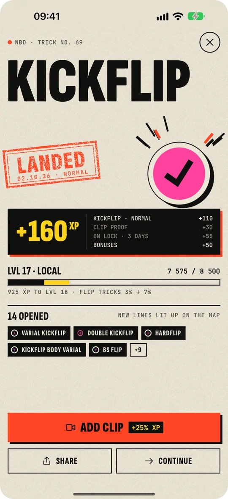

show up
Skate 2 days this week
Your own number, from settings. Any session counts.
+60 XP
1 / 2
NBD · скейт-тренер и карта трюков
215 трюков · 10 сегментов · 39 линий
Линии растут из Stance — так же, как трюки растут друг из друга.
Сегмент 04 · FL · 29 трюков
Одна линия — одно семейство: от Kickflip в начале до 360 Hardflip в конце.
Красный — трюк, который учишь. Зайдёт — и на карте загорятся новые линии.
Один трюк · пять состояний
На карте у Kickflip пять состояний:
215 трюков · 215 страницТапни трюк — откроется его страница.
Kickflip Family · 1 of 7
An ollie where the front foot flicks off the heel-side edge of the nose, spinning the board one full flip along its length.
Четыре стойки — четыре битвы. Каждая считается сама по себе: свой статус, свой XP. Тапни стойку.
Маршрут. На Kickflip стоят 22 трюка в пяти сегментах: флипы, грайнды, слайды, мэнуалы и эйры. Зайдёт — откроются те, которым больше ничего не нужно.
Flick out and slightly up off that corner with the outside of your toes — do not kick down.
Шаги — для каждого трюка на карте, и у каждой ошибки сразу есть исправление.
Find a tutorial on YouTube (откроется YouTube в новой вкладке)Приложение молчит, пока трюк не зайдёт.
Нажми и держи · 0,6 с С клавиатуры — пробел или Enter

Настоящий экран. Прогресс выдуманный, остальное — как в приложении.
NBD · trick no. 69
Kickflip
LVL 17 · Local7 575 / 8 500
925 XP to LVL 18 · Flip Tricks 3% → 7%
14 openednew lines lit up on the map
Kickflip · следующая катка
Kickflip
0 makes
3 tries
0 in a row
+1 day · 2/3
Один раз — может, и повезло. Зайдёт сегодня — второй день из трёх до «железно».
Выбери трюки на сегодня и отмечай каждую попытку одним тапом: есть или мимо. Сколько подряд, NBD считает сам — голова занята трюком, а не счётом.
Со звуком каждое «есть» подряд щёлкает на полтона выше.
Week · 28.09 – 04.10
swap · 1 of 1
show up
Your own number, from settings. Any session counts.
+60 XP
1 / 2
progress
One trick stands between you and a complete line.
+160 XP
0 / 1
depth
Same trick, other stance. It's open on your map.
+90 XP
0 / 1
Одна замена в неделю. Попробуй
Каждый понедельник — три квеста: явка, прогресс, глубина. Они собраны из твоей карты и твоего темпа и подсказывают, над чем работать дальше. Закроешь все три — сверху бонус. Квест не в тему — раз в неделю его можно заменить.
Больше серия ничего не просит. Неделю, смытую дождём, сам прикроет rain check. Травма или не сезон — ставишь паузу, и серия ждёт сколько нужно.
Больше серия ничего не просит. Неделю, смытую дождём, сам прикроет rain check. Травма или не сезон — ставишь паузу, и серия ждёт сколько нужно.
Серия в приложении — 1 неделя. На следующей неделе дождь, катки нет. Эту неделю сам прикрывает rain check, и серия остаётся 1 неделя.
Травма или снег за окном? Жми паузу.
XP за каждый трюк, линию и сегмент: Kickflip в своей стойке — это 110, а за целую линию или целый сегмент сверху идёт бонус. Из XP складываются уровни, из уровней — восемь рангов.
7 575 / 8 500 XP
ещё 925 XP до LVL 18
Спот тебя знает. Трещина перед леджем — тоже.
Первый поставленный трюк, первый клип, первый трюк «железно», первая целая линия — и наклейка прилетает в профиль. 17 из них секретные: без подсказок, откроются, когда случится.
Тапни наклейку — узнаешь, за что она
Нет — и это специально
катай, а не листай
Карта живёт у тебя в телефоне.
Клипы и катки — там же. Отправлять их некуда: сервера нет, регистрироваться не нужно, рекламы между трюками нет. Нужна копия — выгрузи бэкап, когда захочешь: один файл, а куда его деть, решаешь ты.
Или тапни любой трюк прямо на карте
Отметь пару трюков, которые уже есть, — и всё, на чём они стоят, загорится вместе с ними.
Kickflip на карте трюков ночью. Пока листаешь, вид отъезжает до всего города и загорается каждый трюк — от Stance дальше, линия за линией, пока не загорятся все 215.
Пару сезонов спустя.
Скоро в App Store.
Бета открытаTestFlight · залетай →Интерфейс приложения пока на английском.